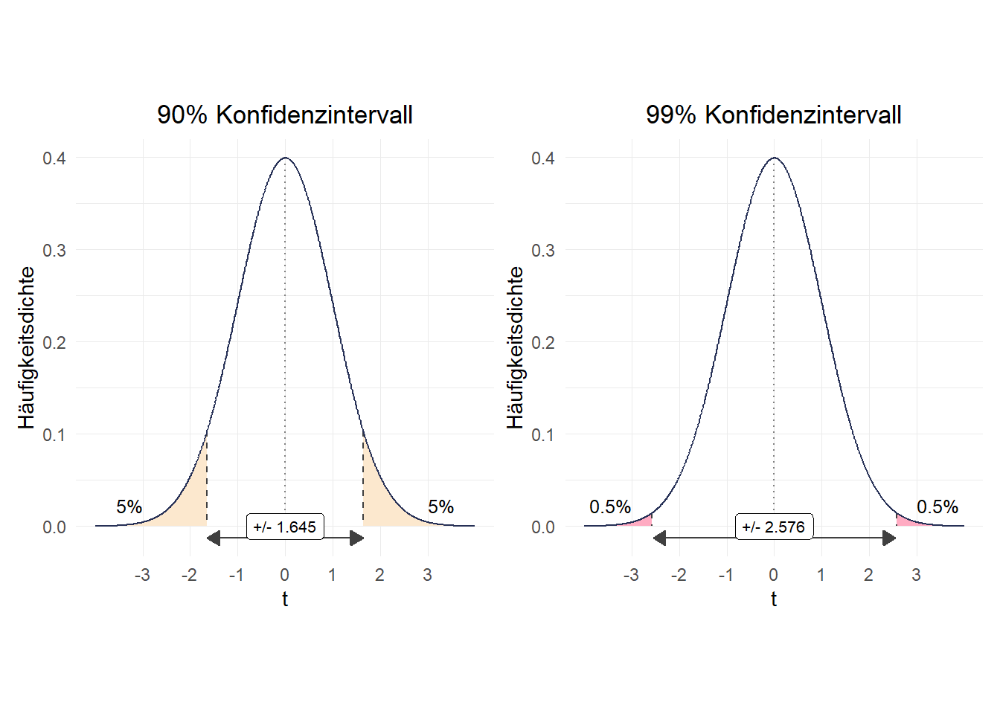
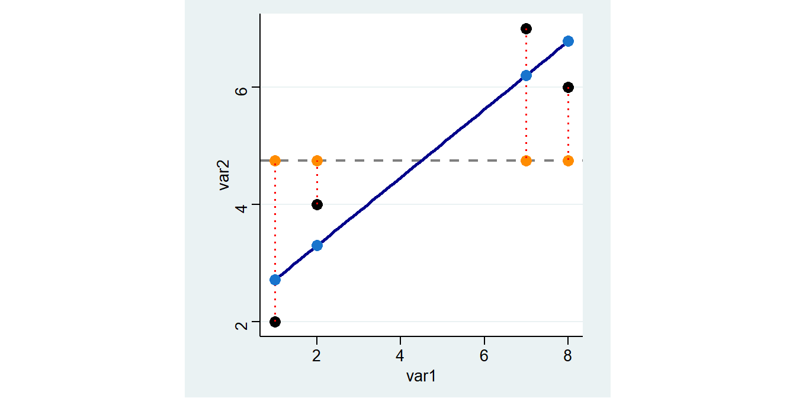

6 Zusammenhangsmaße
6.1 Zusammenhangsstärke für metrische Variablen
Wir sehen uns den (möglichen) Zusammenhang zwischen dem Alter und dem BMI der Befragten an. Dazu schließen wir zunächst die Missings aus:
(ALLBUS Kumulation 1980-2018)
(64681 observations deleted)
age: 7 missing values generated
hs18: 1859 missing values generatedZur grafischen Analyse möglicher Zusammenhänge bei metrischen Variablen empfiehlt sich ein Scatterplot:
Zur Bestimmung eines Zusammenhangs zwischen zwei metrischen Variablen empfiehlt sich der Korrelationskoeffizient nach Pearson. Dieser ist definiert als die Kovarianz dividiert durch die jeweiligen Standardabweichungen der beiden Variablen und liegt im Intervall [-1,1]. Die Standardabweichung hatten wir in Woche 5 kennengelernt, die Kovarianz erfasst die Lage der Datenpunkte relativ zu den Mittelwerten der beiden interessierenden Variablen (liegen Punkte > \(\bar{x}\) auch \(>\bar{y}\)?):
 In Stata können wir den Korrelationskoeffizienten mit
In Stata können wir den Korrelationskoeffizienten mit corr berechnen:
(obs=1620)
| age bmi
-------------+------------------
age | 1.0000
bmi | 0.2127 1.0000Es handelt sich also um einen schwachen Zusammenhang.
6.2 Regression

Mit Regressionsmodellen können wir Zusammenhänge zwischen zwei metrischen Merkmalen untersuchen. In Stata können wir eine Regression mit dem reg Befehl berechnen:
Source | SS df MS Number of obs = 4
-------------+------------------------------ F( 1, 2) = 11.07
Model | 12.4932432 1 12.4932432 Prob > F = 0.0797
Residual | 2.25675676 2 1.12837838 R-squared = 0.8470
-------------+------------------------------ Adj R-squared = 0.7705
Total | 14.75 3 4.91666667 Root MSE = 1.0623
------------------------------------------------------------------------------
var2 | Coef. Std. Err. t P>|t| [95% Conf. Interval]
-------------+----------------------------------------------------------------
var1 | .5810811 .1746331 3.33 0.080 -.1703044 1.332467
_cons | 2.135135 .9485004 2.25 0.153 -1.945933 6.216203
------------------------------------------------------------------------------Hier steht jetzt eine ganze Menge an Informationen, die wir uns im Folgenden genauer ansehen werden.

6.3 Idee einer Regression
Ziel der Regression ist es, den Zusammenhang zwischen diesen beiden Variablen zu bestimmen. Gibt es einen Trend, in dem Sinn, dass ein höherer Wert von var1 mit einem höheren oder niedrigeren Wert von var2 einhergeht?
Etwas anders gesagt könnte man auch fragen, welchen Wert für var2 wir vorhersagen würden, wenn wir var1 kennen. Ein Ausgangspunkt ist das arithmetische Mittel. Dieses können wir mit mean zB für var2 berechnen.1 Diesen Wert fügen wir als neue Spalte mean_var2 in den Datensatz ein:
var1 var2 mean_var2
1 1 2 4.75
2 2 4 4.75
3 7 7 4.75
4 8 6 4.75 Müssten wir eine Prognose für die Werte von
Müssten wir eine Prognose für die Werte von var2 abgeben, wäre das arith. Mittel eine gute Wahl. Die vorhergesagten Werte werden jeweils auf der Linie für das arith. Mittel liegen.

6.4 Residuen
Allerdings liegen wir mit dem arith. Mittel dann immer auch Stück daneben. Diese Abweichung zwischen dem tatsächlichen und dem vorhergesagten Wert wird als Residuum bezeichnet, in unserem Beispiel ist das jeweils die Differenz zwischen var2 und mean:
\[Residuum = beobachteter\, Wert \; - \; vorhergesagter\,Wert\]
Als Formel wird das in der Regel wie folgt dargestellt:
\[\epsilon_{\text{i}} = \text{y}_{i} - \hat{\text{y}}_{i}\]
Wir können also die Residuen als Differenz zwischen var2 und mean berechnen und in df ablegen:
var1 var2 mean_var2 m_abw
1 1 2 4.75 -2.75
2 2 4 4.75 -0.75
3 7 7 4.75 2.25
4 8 6 4.75 1.25
Was bedeutet also ein negativer oder ein positiver Wert für das Residuum?
Die horizontale Linie für das arithm. Mittel ist aber sehr deutlich nicht die beste Methode, um die Werte für var2 vorherzusagen. In der Graphik können wir deutlich sehen, dass die Werte “weiter links”, also mit geringeren Werten für var1, auch geringere Werte für var2 aufweisen. Wir könnten also unseren Vorhersagefehler bzw. das Residuum minimieren indem wir die Linie drehen. Die Idee der Regressionsanalyse ist es dabei, die Residuuen zu minimieren. Was würde aber passieren wenn wir die Residuen aus der Mittelwertsvorhersage aufsummieren, um Sie dann zu minimieren?
6.4.1 Quadrierte Residuen
Mit tabstat ..., s(sum) können wir die Summe für eine Variable bilden:
var1 var2 mean_var2 m_abw
1 1 2 4.75 -2.75
2 2 4 4.75 -0.75
3 7 7 4.75 2.25
4 8 6 4.75 1.25 variable | sum
-------------+----------
m_abw | 0
------------------------Die Summe der Resiuden auf Basis des arith. Mittels ist immer Null!
Anders formuliert: die gestrichelten Linien nach oben sind in Summe genauso lang wie gestrichelten Linien nach unten.
Die Lösung ist die Residuen zu quadrieren. So ergibt sich eine Kennzahl, die wir minimieren können:
Source | SS df MS Number of obs = 4
-------------+------------------------------ F( 1, 2) = 11.07
Model | 12.4932432 1 12.4932432 Prob > F = 0.0797
Residual | 2.25675676 2 1.12837838 R-squared = 0.8470
-------------+------------------------------ Adj R-squared = 0.7705
Total | 14.75 3 4.91666667 Root MSE = 1.0623
------------------------------------------------------------------------------
var2 | Coef. Std. Err. t P>|t| [95% Conf. Interval]
-------------+----------------------------------------------------------------
var1 | .5810811 .1746331 3.33 0.080 -.1703044 1.332467
_cons | 2.135135 .9485004 2.25 0.153 -1.945933 6.216203
------------------------------------------------------------------------------
variable | sum
-------------+----------
m_abw2 | 14.75
------------------------ var1 var2 mean_var2 m_abw m_abw2
1 1 2 4.75 -2.75 7.5625
2 2 4 4.75 -0.75 0.5625
3 7 7 4.75 2.25 5.0625
4 8 6 4.75 1.25 1.56256.5 Interpretation der Regression
Die Minimierung erledigt reg für uns. Hier geben wir zuerst das Merkmal an, das auf der y-Achse liegt (die abhängige Variable) und dann das Merkmal für die x-Achse (unabhängige Variable) an. Ein positiver Wert unter var1 bedeutet, dass unsere Gerade von links nach rechts ansteigt und ein negativer eine fallende Linie bedeuten würde. Der Wert unter var1 gibt an, um wieviel sich die Gerade pro “Schritt nach rechts” nach oben/unten verändert. Die Gerade steigt also pro Einheit von var1 um 0.5810811:
Source | SS df MS Number of obs = 4
-------------+------------------------------ F( 1, 2) = 11.07
Model | 12.4932432 1 12.4932432 Prob > F = 0.0797
Residual | 2.25675676 2 1.12837838 R-squared = 0.8470
-------------+------------------------------ Adj R-squared = 0.7705
Total | 14.75 3 4.91666667 Root MSE = 1.0623
------------------------------------------------------------------------------
var2 | Coef. Std. Err. t P>|t| [95% Conf. Interval]
-------------+----------------------------------------------------------------
var1 | .5810811 .1746331 3.33 0.080 -.1703044 1.332467
_cons | 2.135135 .9485004 2.25 0.153 -1.945933 6.216203
------------------------------------------------------------------------------In unserer Grafik sieht diese Gerade so aus:
6.5.1 Vorhergesagte Werte
Wie hoch ist nun der vorhergesagte Wert auf Basis der blauen Gerade?
Die vohergesagten Werte aus reg var2 var1 entsprechen einfach der Summe aus dem Wert unter Intercept und dem Koeffizienten neben var1 multipliziert mit dem jeweiligen Wert für var1.2
var2 | Coef. Std. Err. t P>|t| [95% Conf. Interval]
-------------+----------------------------------------------------------------
var1 | .5810811 .1746331 3.33 0.080 -.1703044 1.332467
_cons | 2.135135 .9485004 2.25 0.153 -1.945933 6.216203
------------------------------------------------------------------------------Vorhergesagte Werte werden mit \(\widehat{var2}\) bezeichnet - der ^ steht dabei für “vorhergesagt”:
\[\widehat{var2}=\texttt{Intercept} + 0.5811 \times \texttt{var1}\]
Für die erste Zeile ergibt sich also folgender vorhergesagter Wert: 2.1351+0.5811*1= 2.7162
Also könnten wir mit gen die vorhergesagten Werte “manuell” berechnen:
Die vorhergesagten Werte können wir auch mit predict berechnen und in einer neuen Variable pred_vorher ablegen:
var1 var2 mean_var2 m_abw m_abw2 man_vorhers pred_vorher
1 1 2 4.75 -2.75 7.5625 2.7162 2.716216
2 2 4 4.75 -0.75 0.5625 3.2973 3.297297
3 7 7 4.75 2.25 5.0625 6.2028 6.202703
4 8 6 4.75 1.25 1.5625 6.7839 6.783784Die Grafik zeigt wie Vorhersagen auf Basis des Regressionsmodells aussehen: Sie entsprechen den Werten auf der blauen Geraden (der sog. Regressionsgeraden) an den jeweiligen Stellen für var1.

Wir können erkennen, dass die hellblauen Punkte (also die Vorhersagen des Regressionsmodells) deutlich näher an den tatsächlichen Punkten liegen als die orangen Vorhersagen auf Basis des mean.
6.5.2 Residuen
Trotzdem sind auch die hellblauen Punkte nicht deckungsgleich mit den tatsächlichen Werten. Es gibt also auch hier wieder Residuen, also Abweichungen des beobachteten vom vorhergesagten Wert. Wir können diese per Hand berechnen als Differenz zwischen dem tatsächlichen und dem vorhergesagten Wert:
Oder wir können Sie mit predict neue_variable , residuals erstellen:
var1 var2 mean_var2 m_abw m_abw2 man_vorhers pred_vorher res p_res
1 1 2 4.75 -2.75 7.5625 2.7162 2.716216 -0.7162162 -0.7162162
2 2 4 4.75 -0.75 0.5625 3.2973 3.297297 0.7027027 0.7027027
3 7 7 4.75 2.25 5.0625 6.2028 6.202703 0.7972973 0.7972973
4 8 6 4.75 1.25 1.5625 6.7839 6.783784 -0.7837838 -0.7837838Hier sind die Residuen für p_res als hellblaue Linien eingezeichnet:
 Wie groß ist die Summe der Residuen für
Wie groß ist die Summe der Residuen für lm?
6.5.3 Modellgüte
Um zu beurteilen, um wieviel besser unsere Gerade aus reg die Werte vorhersagt kann als der mean können wir die Summe der quadrierten Residuen vergleichen. Dazu quadrieren wir also die Residuen:
var1 var2 mean_var2 m_abw m_abw2 man_vorhers pred_vorher res res2
1 1 2 4.75 -2.75 7.5625 2.7162 2.716216 -0.7162162 0.5129657
2 2 4 4.75 -0.75 0.5625 3.2973 3.297297 0.7027027 0.4937911
3 7 7 4.75 2.25 5.0625 6.2028 6.202703 0.7972973 0.6356830
4 8 6 4.75 1.25 1.5625 6.7839 6.783784 -0.7837838 0.6143170Dann können wir die Summen der quadierten Abweichungen aus der Mittelwertregel und dem Regressionsmodell vergleichen:
Zum Beispiel können wir uns fragen, um wieviel sich die Summe der quadrierten Residuen verringert wenn wir statt des mean unser reg-Modell verwenden:
Wenn wir diese Veränderung ins Verhältnis mit dem “Ausgangswert”, also den Residuen aus der Mittelwertregel setzen, dann erhalten wir das \(R^{2}\) für unser reg-Modell. Dieses gibt die prozentuale Verringerung der Residuen durch das reg-Modell im Vergleich zur Mittelwertregel an:
Unser Regressionsmodell kann also 84,7% der Streuung um den Mittelwert erklären. Dieser Wert wird auch als \(R^2\) bezeichnet. Im Regressionsoutput können wir das \(R^2\) oben rechts unter R-squared ablesen.
reg var2 var1
Source | SS df MS Number of obs = 4
-------------+------------------------------ F( 1, 2) = 11.07
Model | 12.4932432 1 12.4932432 Prob > F = 0.0797
Residual | 2.25675676 2 1.12837838 R-squared = 0.8470
-------------+------------------------------ Adj R-squared = 0.7705
Total | 14.75 3 4.91666667 Root MSE = 1.0623
------------------------------------------------------------------------------
var2 | Coef. Std. Err. t P>|t| [95% Conf. Interval]
-------------+----------------------------------------------------------------
var1 | .5810811 .1746331 3.33 0.080 -.1703044 1.332467
_cons | 2.135135 .9485004 2.25 0.153 -1.945933 6.216203
------------------------------------------------------------------------------Außerdem sehen wir oben links in der Spalte SS die “Sum of Squares”. Hier finden wir auch die Werte von oben wieder: unter Total ist die Summe der quadrierten Abweichungen der beobachteten Werte vom arith. Mittel angegeben (14.75, sozusagen die Summe der m_abw2 von oben). Residual gibt die Summe der Abweichungsquadrate zwischen den beobachteten Werten und den vorhergesagten Werten der Regression (2.256.., Die Summe von res2).
6.6 Übungen
6.7 Ordinale Merkmale
Ein klassisches ordinales Merkmal ist die Bildung (educ):
educ |
Schulabschluss |
|---|---|
1 |
Schule beendet ohne Abschluss |
2 |
Volks-/Hauptschulabschluss bzw. Polytechnische Oberschule (8. oder 9. Klasse) |
3 |
Mittlere Reife, Realschulabschluss bzw. Polytechnische Oberschule (10. Klasse) |
4 |
Fachhochschulreife (Abschluss einer Fachoberschule etc.) |
5 |
Abitur bzw. Erweiterte Oberschule mit Abschluss 12. Klasse (Hochschulreife) |
Wir sehen uns den Zusammenhang der Bildung der Befragten mit der Einstellung zum Zuzug von Asylsuchenden (mi02) an:

Wir sehen uns den (möglichen) Zusammenhang zwischen diesen beiden Merkmalen an. Dazu schließen wir zunächst die Missings aus. Außerdem überschreiben die wie Kategorien “noch Schüler” und “anderer Schulabschluss” mit NA um eine klare ordinale Rangfolge für educ zu erhalten (je höher,desto höher der Bildungsabschluss):
cd ""
use "Allbus_1980-2018.dta",clear
keep if year == 1990
mvdecode educ, mv(-9 6 7)
mvdecode mi02, mv(-9 -8 -8) educ: 65 missing values generated
mi02: 96 missing values generatedSo sieht die Verteilung zunächst in einer Kreuztabelle aus:
ALLGEMEINER | ZUZUG VON: ASYLSUCHENDEN
SCHULABSCHLUSS | VERWEIGER UNEINGESC ZUZUG BEG GANZ UNTE | Total
-------------------+--------------------------------------------+----------
OHNE ABSCHLUSS | 0 7 18 36 | 61
VOLKS-,HAUPTSCHULE | 0 123 659 600 | 1,382
MITTLERE REIFE | 0 137 390 177 | 704
FACHHOCHSCHULREIFE | 0 48 101 21 | 170
HOCHSCHULREIFE | 1 232 287 53 | 573
-------------------+--------------------------------------------+----------
Total | 1 547 1,455 887 | 2,890 Zur Bestimmung eines Zusammenhangs zwischen zwei ordinal skalierten Variablen empfiehlt sich der Spearman-Rangkorrelationskoeffizient (\(\rho\)). Für den Rangkorrelationskoeffizienten werden die Werte der Variablen in Ränge überführt und dann mit diesen Rängen den Korrelationskoeffizient berechnet. Wir können den Rangkorrelationskoeffizienten mit spearman berechnen:
Number of obs = 2890
Spearman's rho = -0.3756
Test of Ho: educ and mi02 are independent
Prob > |t| = 0.0000Es zeigt sich also mit einem Korrelationskoeffizienten von 0.37 ein negativer Zusammenhang, der jedoch noch als schwach einzustufen ist. Das negative Vorzeichen des Zusammenhangs deutet darauf hin, dass mit einer höheren Ausprägung von educ tendenziell niedrigere Werte für mi02 einher gehen: eine höhere Schulbildung geht mit einer positiveren Haltung gegenüber dem Zuzug von Asylsuchenden einher.
Ein weiteres Zusammenhangsmaß für ordinale Variablen sind Konkordanzmaße wie Kendall’s \(\tau\). Hierfür die Werteverhältnisse gezählt, zur Berechnung in Stata können wir wieder ktau verwenden:
Number of obs = 2890
Kendall's tau-a = -0.2155
Kendall's tau-b = -0.3355
Kendall's score = -899642
SE of score = 44146.125 (corrected for ties)
Test of Ho: educ and mi02 are independent
Prob > |z| = 0.0000 (continuity corrected)Auch hier zeigt sich eine Zusammenhangsstärke in der gleichen Größenordnung wie beim Rangkorrelationskoeffizienten. Zudem ist auch hier das Vorzeichen negativ: educ korreliert negativ mit mi02. Der etwas geringere Wert ist auf die unterschiedliche Behandlung der Bindungen bei Kendall’s \(\tau_b\) im Vergleich zum Rangkorrelationskoeffizienten zurückzuführen. Für Kendall’s \(\tau_b\) werden die Paarvergleiche im Nenner ausgeschlossen, die auf beiden Variablen eine Bindung haben.
Der Wert ist deutlich niedriger als von Kendall’s \(\tau_b\), da hier der Nenner durch die Berücksichtigung aller möglichen Paarvergleiche größer wird, der Zähler aber für beide Varianten von Kendall’s \(\tau\) gleich definiert ist.
Insgesamt ist also von einem substantiellen Zusammenhang zwischen educ und mi02 auszugehen.
6.8 Übungen
6.9 Nominal skalierte Variablen
Uns Beispiel für nominal skalierte Variablen dreht sich um die Frage: Haben allein lebende Befragte eher ein Haustier als Befragte, die mit weiteren Personen zusammenleben?
Dazu betrachten wir die Variablen aq03 und dh01, später auch noch dh04:
aq03 |
Haben Sie einen Hund oder eine Katze in Ihrem Haushalt? 1 Ja, Hund 2 Ja, Katze 3 Ja, beides 4 Nein, keines von beiden |
dh01 |
Wohnen außer ihnen noch weitere Personen in diesem Haushalt? 1 Ja 2 Nein, ich lebe allein |
dh04 |
Gesamtzahl der Personen im Haushalt |
(64690 observations deleted)
aq03: 4 missing values generated
dh01: 11 missing values generated
dh04: 24 missing values generatedAusgangspunkt der Zusammenhangsmaße für nominale Merkmale ist die Kontingenztabelle der beiden Variablen:
HUND ODER KATZE | MEHRPERSONENHAUSHALT?
IM HAUSHALT? | MEHRPERSO EINPERSON | Total
-----------------+----------------------+----------
HUND | 353 41 | 394
KATZE | 503 65 | 568
BEIDES | 117 9 | 126
KEINS VON BEIDEN | 1,792 579 | 2,371
-----------------+----------------------+----------
Total | 2,765 694 | 3,459 Um diese Tabelle für den Einstieg noch etwas übersichtlicher zu halten, fassen wir die Hunde- und Katzenbesitzer*innen zusammen. Das geht mit gen: wir formulieren darin eine Bedingung und wenn diese zutrifft wird der erste Wert eingesetzt, wenn nicht wird der zweite Wert eingesetzt. Hier fragen wir also ab, ob aq03 gleich 4 ist - dann wird eine 0 eingesetzt, ansonsten eine 1:
aq03 aq03b
1 4 0
2 2 1
3 3 1
4 4 0
5 4 0
6 4 0
7 2 1
8 4 0
9 4 0
10 1 1Die daraus resultierende Kontingenztabelle ist schön übersichtlich:
| MEHRPERSONENHAUSHALT?
aq03b | MEHRPERSO EINPERSON | Total
-----------+----------------------+----------
0 | 973 116 | 1,089
1 | 1,792 579 | 2,371
-----------+----------------------+----------
Total | 2,765 695 | 3,460 \(\rightarrow\) Wie viele Personen leben also allein und haben kein Haustier?
6.10 Odds Ratio
Die Odds Ratio geben das Verhältnis der bedingten Häufigkeiten an. Wir berechnen in beiden Spalten (also getrennt nach Haushaltsgröße) jeweils die Odds, dass ein*e Befragte*r ein Haustier besitzt (also aq03b = 1). Odds sind dabei immer das Verhältnis \(\frac{interessierende\;Ausprägung}{alle\;anderen\;Ausprägungen}\). Dann setzen wir die Chancen ins Verhältnis zueinander:
\[\text{Odds Haustier in MP-HH} = \frac{973}{1792} = 0.5429688\] \[\text{Odds Haustier allein} = \frac{115}{579} = 0.1986183\] \[\text{Odds Ratio Haustier MP vs. allein} = \frac{0.5429688}{0.1986183} = 2.73373\] \[\text{Odds Ratio Haustier allein vs. MP HH} = \frac{0.1986183}{0.5429688}=0.3658006\] Interpretation:
- Alleinlebende Befragte haben im Vergleich zu Befragten, die mit anderen Personen zusammen wohnen, die 0.366-fache Chance Haustiere zu haben.
- Befragte, die mit anderen Personen zusammen wohnen, haben im Vergleich zu alleinlebenden Befragten die 2.734-fache Chance Haustiere zu haben.
Odds Ratios sind aber auch aus “größeren” Tabellen berechenbar - zB können wir auch die exakte Haushaltsgröße dh04 sowie die detaillierten Kategorien zum Haustierbesitz (aq03) verwenden:
HUND ODER KATZE | ANZAHL DER HAUSHALTSPERSONEN
IM HAUSHALT? | 1 2 3 4 5 6 7 8 10 | Total
-----------------+---------------------------------------------------------------------------------------------------+----------
HUND | 41 153 86 73 32 4 2 0 0 | 391
KATZE | 65 250 120 91 31 6 4 0 0 | 567
BEIDES | 9 43 29 26 11 5 1 0 1 | 125
KEINS VON BEIDEN | 579 938 388 342 91 16 7 2 0 | 2,363
-----------------+---------------------------------------------------------------------------------------------------+----------
Total | 694 1,384 623 532 165 31 14 2 1 | 3,446 Jetzt könnten wir den Odds Ratio für Haustierbesitz von allein Lebenden im Vergleich zu Befragten mit einer HH-Größe von 2 berechnen. Dazu setzen wir für die jeweiligen Spalten (weil die HH-Größe dh04 in den Spalten steht) die Häufigkeiten ins Verhältnis. Der Hauptunterschied ist aber, dass wir die Haustierkategorien (aq03 = 1-3) addieren müssen:
\[\text{Odds Haustier in 2P-HH} = \frac{153+250+43}{938} = 0.4754797\] \[\text{Odds Haustier allein} = \frac{41 +65 +9 }{579} = 0.1986183\] \[\text{Odds Ratio Haustier 2P-HH vs. allein} = \frac{0.4754797}{0.1986183} = 2.393937\] \[\text{Odds Ratio Haustier allein vs. 2P HH} = \frac{0.1986183}{0.4754797}=0.4177219\]
Interpretation:
- Allein lebende Befragte haben im Vergleich zu zweit lebenden Befragten die 0.418-fache Chance ein Haustier im Haushalt zu haben.
- Zu zweit lebende Befragte haben im Vergleich zu allein lebenden Befragten die 2.394-fache Chance ein Haustier im Haushalt zu haben.
\(\rightarrow\) Haben allein lebende Befragte eher Katzen als Befragte in einem Haushalt mit 4 Personen? (aq03 = 2 & 3 sind Katzenbesitzer*innen)
6.11 Chi²-basierte Maße
\(\chi^2\) basiert auf dem Vergleich der beobachteten Häufigkeit mit einer (theoretischen) Verteilung, welche statistische Unabhängigkeit abbildet (Indifferenztabelle). Wir bleiben bei aq03 und dh01. Den \(\chi^2\)-Wert für diese Häufigkeitstabelle bekommen wir mit , chi2:
HUND ODER KATZE | MEHRPERSONENHAUSHALT?
IM HAUSHALT? | MEHRPERSO EINPERSON | Total
-----------------+----------------------+----------
HUND | 353 41 | 394
KATZE | 503 65 | 568
BEIDES | 117 9 | 126
KEINS VON BEIDEN | 1,792 579 | 2,371
-----------------+----------------------+----------
Total | 2,765 694 | 3,459
Pearson chi2(3) = 90.4007 Pr = 0.0006.11.1 Cramer’s \(\upsilon\)
Auf Basis dieses \(\chi^2\)-Werts von 90.401 können wir Cramer’s \(\upsilon\) berechnen. Dieses ist definiert als der Quotient aus dem \(\chi^2\)-Wert und der Fallzahl multipliziert mit dem Minimum der Zeilen- und Spaltenzahl. n, erkennen wir aus dem Total rechts unten in der Tabelle
\[ Cramer's\,\,\upsilon = \sqrt{\frac{\chi^2}{n*\,min(k-1,m-1)}}=\sqrt{\frac{90.401}{3459*1}} = 0.162\]
Dieser Wert für Cramer’s \(\upsilon\) legt einen geringen Zusammenhang nahe (vgl. S.25 Vorlesung 6b).
6.11.2 Indifferenztabelle
\(\chi^2\) ergibt sich wie gesagt aus der Differenz zwischen der Indifferenztabelle und den beobachteten Häufigkeiten. Die Indifferenztabelle können wir mit ,expected aufrufen (mit nofreq blenden wir die tatsächlichen Häufigkeiten aus):
HUND ODER KATZE | MEHRPERSONENHAUSHALT?
IM HAUSHALT? | MEHRPERSO EINPERSON | Total
-----------------+----------------------+----------
HUND | 314.9 79.1 | 394.0
KATZE | 454.0 114.0 | 568.0
BEIDES | 100.7 25.3 | 126.0
KEINS VON BEIDEN | 1,895.3 475.7 | 2,371.0
-----------------+----------------------+----------
Total | 2,765.0 694.0 | 3,459.0 Ausgangspunkt für diese Indifferenztabelle sind die relativen Häufigkeiten der tatsächlich beoachteten Werte:
HUND ODER KATZE | MEHRPERSONENHAUSHALT?
IM HAUSHALT? | MEHRPERSO EINPERSON | Total
-----------------+----------------------+----------
HUND | 10.21 1.19 | 11.39
KATZE | 14.54 1.88 | 16.42
BEIDES | 3.38 0.26 | 3.64
KEINS VON BEIDEN | 51.81 16.74 | 68.55
-----------------+----------------------+----------
Total | 79.94 20.06 | 100.00 0.26 % der Befragten wohnen alleine (dh01 = 2) und haben einen Hund und eine Katze (aq03=3).
Uns interessieren hier nur die Randverteilungen aus Sum: 3.64 % der Befragten haben einen Hund und eine Katze (aq03=3). 20.06 % der Befragten wohnen alleine (dh01 = 2).
| MEHRPERSO | EINPERSON | Total | |
|---|---|---|---|
| HUND | A | E | 0.1139 |
| KATZE | B | F | 0.1642 |
| BEIDES | C | G | 0.0364 |
| KEINES VON BEIDEM | D | H | 0.6855 |
| Total | 0.7994 | 0.2006 | 1 |
Wären beide Merkmale unabhängig voneinander, würden wir erwarten, dass die Wahrscheinlichkeit für das Auftreten einer Merkmalskombination dem Produkt der Einzelwahrscheinlichkeiten entspricht (das ist die “Indifferenz”): \(P(A\cup B) = P(A) \times P(B)\). Bspw. ergibt sich der erwartete Wert für die Zellen dann aus der relativen Randverteilung multipliziert mit der Gesamtfallzahl:
für Zelle
B:0.1642\(\times\)0.7994\(\times\) 3459 = 454.0387.für Zelle
C:0.0364\(\times\)0.7994\(\times\) 3459 = 100.7199.für Zelle
H:0.6855\(\times\)0.2006\(\times\) 3459 = 475.708.
\(\chi^2\) ist dann die summierte Differenz zwischen dieser Indifferenztabelle (also der erwarteten Verteilung bei Unabhängigkeit beider Merkmale) und den beobachteten Häufigkeiten: je größer die Differenz, desto unwahrscheinlicher ist es, dass beide Merkmale unabhängig sind.
6.11.3 \(\phi\)
Eine Variante von Cramer’s \(\upsilon\) für 2x2-Tabellen ist \(\phi\). Dies wäre das passende Maß für die zusammengefasste Variable aller Haustierbesitzer*innen aq03b von oben und dh01:
| MEHRPERSONENHAUSHALT?
aq03b | MEHRPERSO EINPERSON | Total
-----------+----------------------+----------
0 | 973 116 | 1,089
1 | 1,792 579 | 2,371
-----------+----------------------+----------
Total | 2,765 695 | 3,460
Pearson chi2(1) = 88.1259 Pr = 0.000\[\phi= \sqrt{\frac{\chi^2}{n}}=\sqrt{\frac{88.34}{3459}} = 0.1598\]